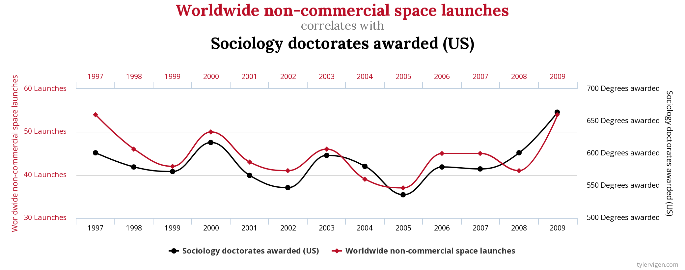

Introduction to Instrumental Variables
Data-Based Economics (2022-2023)
Categorical Variables
Data
Our multilinear regression: \[y = \alpha + \beta x_1 + \cdots + \beta x_n\]
So far, we have only considered real variables: (\(x_i \in \mathbb{R}\)).
- ex: \(x_{\text{gdp}} = \alpha + \beta_1 x_{\text{unemployment}} + \beta_2 x_{\text{inflation}}\)
How do we deal with the following cases?
- binary variable: \(x\in \{0,1\}\) (or \(\{True, False}\))
- ex: \(\text{gonetowar}\), \(\text{hasdegree}\)
- categorical variable:
- ex: survey result (0: I don’t know, 1: I strongly disagree, 2: I disagree, 3: I agree, 4: I strongly agree)
- there is no ranking of answers
- when there is ranking: hierarchical index
- nonnumerical variables:
- ex: (flower type: \(x\in \text{myosotis}, \text{rose}, ...\))
- binary variable: \(x\in \{0,1\}\) (or \(\{True, False}\))
Binary variable
- Nothing to be done: just make sure variables take values 0 or 1. \[y_\text{salary} = \alpha + \beta x_{\text{gonetowar}}\]
- Interpretation:
- having gone to war is associated with a \(\beta\) increase (or decrease?) in salary (still no causality)
Categorical variable
Look at the model: \[y_{\text{CO2 emission}} = \alpha + \beta x_{\text{yellow vest support}} \]
Where \(y_{\text{CO2 emission}}\) is an individual’s CO2 emissions and \(x_{\text{yellow vest support}}\) is the response the the question Are you in agreement with the yellow vests demands?.
Response is coded up as:
- 0: Strongly disagree
- 1: Disagree
- 2: Neutral
- 3: Agree
- 4: Strongly agree
If the variable was used directly, how would you intepret the coefficient \(\beta\) ?
- index is hierarchical
- but the distances between 1 and 2 or 2 and 3 are not comparable…
Hierarchical index (2):
- We use one dummy variable per possible answer.
| \(D_{\text{Strongly Disagree}}\) | \(D_{\text{Disagree}}\) | \(D_{\text{Neutral}}\) | \(D_{\text{Agree}}\) | \(D_{\text{Strongly Agree}}\) |
|---|---|---|---|---|
| 1 | 0 | 0 | 0 | 0 |
| 0 | 1 | 0 | 0 | 0 |
| 0 | 0 | 0 | 0 | 0 |
| 0 | 0 | 0 | 1 | 0 |
| 0 | 0 | 0 | 0 | 1 |
- Values are linked by the specific dummy coding.
- the choice of the reference group (with 0) is not completely neutral
- for linear regressions, we can ignore its implications
- it must be frequent enough in the data
- effects coding: reference group takes -1 instead of 0
- the choice of the reference group (with 0) is not completely neutral
- Note that hierarchy is lost. The same treatment can be applied to non-hierachical variables
- Now our variables are perfectly colinear:
- we can deduce one from all the others
- we drop one from the regression: the reference group TODO
Hierarchical index (3)
\[y_{\text{CO2 emission}} = \alpha + \beta_1 x_{\text{strdis}} + \beta_2 x_{\text{dis}} + \beta_3 x_{\text{agr}} + \beta_4 x_{\text{stragr}}\]
- Interpretation:
- being in the group which strongly agrees to the yellow vest’s claim is associated with an additional \(\beta_4\) increase in CO2 consumption compared with members of the neutral group
Nonnumerical variables
- What about nonnumerical variables?
- When variables take nonnumerical variables, we convert them to numerical variables.
- Example:
| activity | code |
|---|---|
| massage therapist | 1 |
| mortician | 2 |
| archeologist | 3 |
| financial clerks | 4 |
-
Then we convert to dummy variables exactly like hierarchical indices
- here \(\text{massage therapist}\) is taken as reference
| \(D_{\text{mortician}}\) | \(D_{\text{archeologist}}\) | \(D_{\text{financial clerks}}\) |
|---|---|---|
| 1 | 0 | 0 |
| 0 | 1 | 0 |
| 0 | 0 | 1 |
Hands-on
Use statsmodels to create dummy variables with formula API.
- Replace
salary ~ activity- by:
salary ~ C(activity)There is an options to choose the reference group
salary ~ C(activity, Treatment(reference="archeologist"))Causality
What is causality?

Clear? Huh! Why a four-year-old child could understand this report! Run out and find me a four-year-old child, I can’t make head or tail of it.
Spurious correlation

- We have seen spurious correlation before
- it happens when two series comove without being actually correlated
- Also, two series might be correlated without one causing the other
- ex: countries eating more chocolate have more nobel prices…
Definitions?
But how do we define
- correlation
- causality
?
Both concepts are actually hard to define:
- in statistics (and econometrices) they refer to the generating process
- if the data was generated again, would you observe the same relations?
For instance correlation between \(X\) and \(Y\) is just the average correlation taken over many draws \(\omega\) of the data: \[E_{\omega}\left[ (X-E[X])(Y-E[Y])\right]\]
How do we define causality (1)
- In math, we have implication: \(A \implies B\)
- applies to statements that can be either true or false
- given \(A\) and \(B\), \(A\) implies \(B\) unless \(A\) is true and \(B\) is false
- paradox of the drinker: at any time, there exists a person such that: if this person drinks, then everybody drinks
- In a mathematical universe taking values \(\omega\), we can define causality between statement \(A(\omega)\) and \(B(\omega)\) as : \[\forall \omega, A(\omega) \implies B(\omega)\]
How do we define causality (2)
But causality in the real world is problematic
Usually, we observe \(A(\omega)\) only once…
Example:
- state of the world \(\omega\): 2008, big financial crisis, …
- A: Ben Bernanke chairman of the Fed
- B: successful economic interventions
- Was Ben Bernanke a good central banker?
- Impossible to say.

Then there is the uncertain concept of time… But let’s take it as granted to not overcomplicate…
Causality in Statistics
Variable \(A\) causes \(B\) in a statistical sense if - \(A\) and \(B\) are correlated - \(A\) is known before \(B\) - correlation between \(A\) and \(B\) is unaffected by other variables
- There are other related statistical definitions:
- like Granger causality…
- … but not for this course
Experiments
Factual and counterfactual
- Suppose we observe an event A
- A: a patient is administered a drug, government closes all schools during Covid
- We observe a another event B
- B: the patient recovers, virus circulation decreases
- To interpret B as a consequence of A, we would like to consider the counter-factual:
- a patient is not administered a drug, government doesn’t close schools
- patient does not recover, virus circulation is stable
An important task in econometrics is to construct a counter-factual
- as the name suggests is it sometimes never observed!
Scientific Experiment

- In science we establish causality by performing experiments
- and create the counterfactual
- A good experiment is reproducible
- same variables
- same state of the world (other variables)
- reproduce several times (in case output is noisy or random)
- Change one factor at a time
- to create a counter-factual
Measuring effect of treatment

- Assume we have discovered two medications: R and B
- Give one of them (R) to a patient and observe the outcome
- Would would have been the effect of (B) on the same patient?
- ????
- What if we had many patients and let them choose the medication?
Maybe the effect would be the consequence of the choice of patients rather than of the medication?
An exmple from behavioural economics
- Example: cognitive dissonance
- Experiment in GATE Lab
- Volunteers play an investment game.
- They are asked beforehand whether they support OM, PSG, or none.
- Experiment 1:
- Before the experiment, randomly selected volunteers are given a football shirt of their preferred team (treatment 1)
- Other volunteers receive nothing (treatment 0)
- Result:
- having a football shirt seems to boost investment performance…
Experiment 2: subjects are given randomly a shirt of either Olympique de Marseille or PSG.
Result:
- Having the good shirt improves performance.
- Having the wrong one deteriorates it badly.
- How would you code up this experiment?
- Can we conclude on some form of causality?

Formalisation of the problem
Cause (A): two groups of people
- those given a shirt (treatment 1)
- those not given a shirt (treatment 0)
Possible consequence (B): performance
Take a given agent Alice: she performs well with a PSG shirt.
- maybe she is a good investor?
- or maybe she is playing for her team?
Let’s try to have her play again without the football shirt
- now the experiment has changed: she has gained experience, is more tired, misses the shirt…
- it is impossible to get a perfect counterfactual (i.e. where only A changes)
- Let’s take somebody else then? Bob was really bad without a PSG shirt.
- he might be a bad investor? or he didn’t understand the rules?
- some other variables have changed, not only the treatment
- How to make a perfect experiment?
- Choose randomly whether assigning a shirt or not
- by construction the treatment will not be correlated with other variables
Randomized Control Trial
The best way to ensure that treatment is independent from other factors is to randomize it.
- In medecine
- some patients receive the treatment (red pill)
- some other receive the control treatment (blue pill / placebo)
- In economics:
- randomized field experiments
- randomized phase-ins for new policies
- very useful for policy evaluation
It is common in economics, instead of assigning treatments randomly, we often say that we assign individuals randomly to the treatment and to the control group. It is equivalent.
Natural experiment
A natural experiment satisfies conditions that treatment is assigned randomly
- without interference by the econometrician
- An exemple of a Natural Experiment:
- gender bias in french local elections (jean-pierre eymeoud, paul vertier) link
- are women discriminated against by voters in local elections?
- Result: yes, they get 1.5% less votes by right-wing voters
- What was the natural experiment
Instrumental variables
Example
Lifetime Earnings and the Vietnam Era Draft Lottery, by JD Angrist
- Fact:
- veterans of the vietnam war (55-75) earn (in the 80s) an income that is 15% less in average than those who didn’t go to the war.
- What can we conclude?
- Hard to say: maybe those sent to the war came back with lower productivity (because of PTSD, public stigma, …)? maybe they were not the most productive in the first place (selection bias)?
- Problem (for the economist):
- we didn’t sent people to war randomly
- Genius idea:
- here is a variable which randomly affected whether people were sent: the Draft
- between 1947, and 1973, a lottery was run to determine who would go to war
- the draft number was determined, based on date of birth, and first letters of name
- and was correlated with the probability that a given person would go to war
- and it was so to say random or at least independent from anything relevant to the problem
- here is a variable which randomly affected whether people were sent: the Draft
Can we use the Draft to generate randomness ?

Problem
- Take the linear regression: \[y = \alpha + \beta x + \epsilon\]
- \(y\): salary
- \(x\): went to war
- We want to establish causality from x to y
- we would like to interpret \(x\) as the “treatment”
- But there can be confounding factors:
- variable \(z\) which causes both x and y
- exemple: socio-economic background, IQ, …
- If we could identify \(z\) we could control for it: \[y = \alpha + \beta_1 x + \beta_2 z + \epsilon\]
- we would get a better predictor of \(y\) but more uncertainty about \(\beta_1\) (\(x\) and \(z\) are correlated)
Reformulate the problem
- Let’s assume treatment \(x\) is a binary variable \(\in{0,1}\)
- We want to estimate \[y = \alpha + \beta x + z + \epsilon\] where \(z\) is potentially correlated to \(x\) and \(y\)
- There are two groups:
- those who receive the treatment \[y = \alpha + \beta + z_{T=1} + \epsilon\]
- the others \[y = \alpha + 0 + z_{T=0} + \epsilon\]
- Problem:
- if \(z\) is higher in the treatment group, its effect can’t be separated from the treatment effect.
- Intuition: what if we make groups differently?
- completely independent from \(z\) (and \(\epsilon\))
- not independently from \(x\) so that one group will receive more treatment than the other
- To make this group we need a new variable \(q\) that is:
- correlated with \(x\) so that it will correspond to some treatment effect
- uncorrelated to \(z\) or \(\epsilon\) (exogenous)
Two stage regression
- We would like to redo the treatment groups in a way that is independent from \(z\) (and everything contained in \(\epsilon\))
- \(q\) is a binary variable: drafted or not
-
First stage: regress group assignment on the instrument: \[x = \alpha_0 + \beta_0 q + \eta\]
- we can now predict group assignment in a way that is independent from \(z\) (and everything in \(\epsilon\)) \[\tilde{x} = \alpha_0 + \beta_0 q\]
- Second stage: use the predicted value instead of the original one \[y = \alpha + \beta_1 \tilde{x} + z + \epsilon\]
-
Result:
- If \(\beta_1\) is significantly nonzero, there is a causal effect between \(x\) and \(y\).
- Note that \(\tilde{x}\) is imperfectly correlated with the treatment: \(\beta_1\) can’t be interpreted directly
- The actual effect will be \(\frac{\beta_1}{\beta_0}\) (in 1d)
- We say that we instrument \(x\) by \(q\).
Choosing a good instrument
A good instrument when trying to explain y by x, is a variable that is correlated to the treatment (x) but does not have any effect on the outcome of interest (y), appart from its effect through x.
In practice
- Both
statsmodelsandlinearmodelssupport instrumental variables- library (look for IV2SLS)
- Library
linearmodelshas a handy formula syntax:salary ~ 1 + [war ~ draft]- API is similar but not exactly identical to statsmodels
- for instance
linearmodelsdoes not include constants by default
- Example from the doc
formula = (
"np.log(drugexp) ~ 1 + totchr + age + linc + blhisp + [hi_empunion ~ ssiratio]"
)
ols = IV2SLS.from_formula(formula, data)
ols_res = ols.fit(cov_type="robust")
print(ols_res)